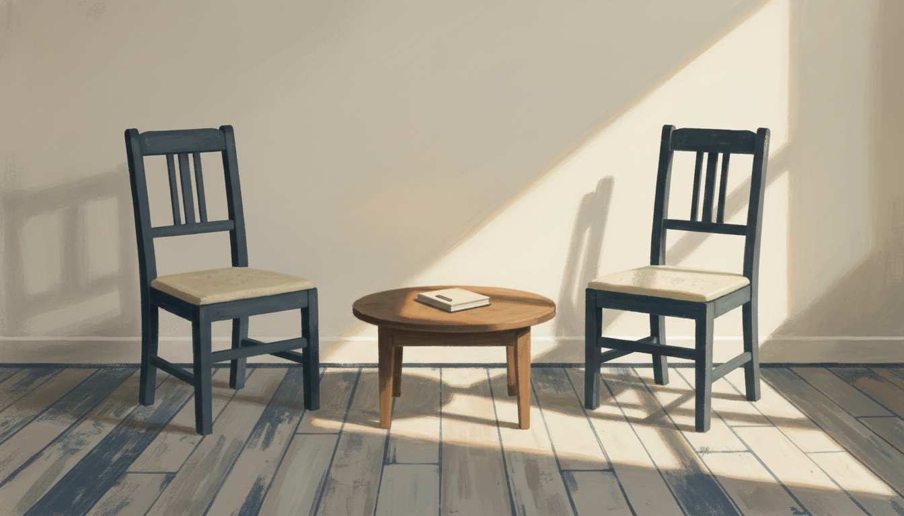

手をぶつけても、その手を合わせて前に進みたいと伝えた夜

同じ話を、また繰り返した日
5月のはじめ、監査ツールの更新作業を終えて、ある店舗の店長と面談に入った。週に一度のすり合わせで、もう何ヶ月も同じ場所をぐるぐる回っている相手だった。
机を挟んで、まず一週間の振り返りを聞いた。前にも聞いた話だった。先週も、その前の週も、似た言葉で同じことが語られていた。途中で何度か、言い回しを変えて同じ問いを返した。返ってくる答えも、ほとんど同じだった。
ふだんなら、ここで自分の中に小さな苛立ちが生まれる。今日は出なかった。代わりに、口から言葉が出た。
「毎週来て、同じ話を繰り返してますよね。それで全然いいんです。手をぶつけても、その手を合わせて、一緒に前に進みたいんです」
言いながら、自分でも少し驚いた。前は、こんなふうに言えなかった。同じ話を繰り返す相手に「もう一回やろう」と言うとき、どこかで自分の手柄を計算していたと思う。今日は、その計算がなかった。
「走れる人には休め、歩けない人には歩け」
続けて、この前から考えていたことを話した。チームの中には、自分から走れる人もいるし、まだ歩くことに迷っている人もいる。前者には「ちょっと止まって、周りを見ろ」と言うほうがいい。後者には「歩いていい、一歩でいいから出してみよう」と言うほうがいい。同じ言葉を全員に渡してもうまくいかない、という話だった。
説明している途中で、相手の目が少し赤くなった。涙が一筋出かかって、止まった。
しばらく沈黙があった。何か言うべきだろうかと考えたけど、何も言わずに待った。
そして、相手のほうから声が出た。「早めにアウトプットして、修正したいです」。私が指示したことではなかった。週次の宿題でもなかった。自分から、自分の動き方を変える提案を出してきた。
そのとき、私は「ああ、今日は通ったんだな」と思った。
2009年、自分のほうを変えるしかなかった頃
ここで一気に時間が巻き戻る。
2009年の春、私は28歳で、九州の小さな店の店長をしていた。前任店から異動してきて、最初の数ヶ月で、人手が足りないという現実にぶつかった。シフトが埋まらない。募集をかけても応募が来ない。来てくれた人が、すぐに辞める。店舗運営が困難、という言葉では足りないくらい、毎日がぎりぎりだった。
最初は、人が悪い、環境が悪い、と思っていた。応募が少ないのは立地のせいだし、辞めるのは本人の事情だし、と。そう考えているあいだは、何も動かなかった。
ある時期から、私は順番を入れ替えるしかなくなった。人や環境を変えるより先に、自分の考え方を変える。それだけが、自分の手元に残っている操作だった。そこから自己啓発を本格的に始めた。感情のコントロールを学んだ。人間関係でぶつかったときの、自分側のクセを観察するようになった。
すぐに何かが解決したわけではない。シフトはしばらく埋まらないままだったし、私の言い方がきつくて従業員を傷つけた日も何度もあった。それでも、自分のほうを動かすという感覚を、初めて手のひらで掴んだのがあの頃だった。
四年半後、その店を異動するときに、何人もの従業員が別れを惜しんでくれた。当時の私には、なぜそうなったのかをきれいに説明できなかった。たぶん今でもできない。自分のほうを変えにいった時間が、向こうに届く形でほんの少しだけ残っていた、というくらいしか言えない。
借り物の言葉が、自分の言葉になるまで
ジャーナリングを一年以上続けてきて、最近やっと気づいたことがある。鍛えられているのは、自分の頭の中の道具だけじゃない。在り方のほうも、ゆっくり変わっている。
面談で「同じ話でいい」と言えたのは、私が我慢強くなったからではない。たぶん、自分の中で、相手のスピードに合わせていい、というのが本気で腹に落ちたからだ。前は「合わせます」と言いながら、内心で時計を見ていた。今日は時計を見なかった。
「走れる人には休め、歩けない人には歩け」も、最初は人から聞いた言葉だった。ずっと意味がわからなかった。今日、相手の目が赤くなる瞬間まで、自分の言葉として使えていなかったと思う。借り物が、ようやく自分の言葉になった日だった。
2009年の私は、人手不足の前で、自分の考え方を入れ替えるしかなかった。今日の私は、店長の前で、自分の渡し方を入れ替えるしかなかった。たぶん同じ線の上にある。相手や状況を動かそうとして動かなかったとき、最後に残るのは自分のほうの操作なんだと、十六年越しに、もう一度確かめた気がする。
同じ話を、もう一度
帰り道、自分が言った「手をぶつけても」という言葉を反芻していた。あれはきれいな比喩ではなかった。実際、私は店長と何度もぶつかってきた。指示が伝わらなかったり、私の言い方がきつくて場を凍らせたり、相手の事情を見落として詰めすぎたりした。そのたびに、お互いに少しずつ削れていた。
それでも、今日は「合わせて進みたい」と言えた。たぶん、削れた分だけ、合う面が増えた。
来週もまた、似た話を聞くと思う。それで全然いい。続けることに飽きないでいられる自分が、ようやく座席についた気がする。
#日記 #ジャーナリング #エッセイ #note #毎日note #毎日更新 #続けること #内省 #自己観察 #気づき #書く #ひとりごと #ライフログ #雑記 #思考整理 #感情整理 #自分メモ #ものづくり #創作 #物書き #40代 #40代の生き方 #個人開発 #ひとり起業 #会社員 #サラリーマン #フリーランス #副業 #店長 #マネジメント #組織 #店舗運営 #人を育てる #対話 #コミュニケーション #人間関係 #家族 #子育て #メンター #上司部下 #生き方 #価値観 #誠実 #迷い #選択 #決断 #覚悟 #待つ #観察 #自己理解 #自己一致 #習慣 #瞑想 #ジム #運動 #読書 #執筆 #朝の時間 #夜の時間 #五月 #初夏 #福岡 #九州 #心の動き #日常 #暮らし #淡々 #小さな気づき #AI #AkariLab #リーダーシップ #店長会議 #面談 #週次ミーティング #ぶつかる #寄り添う #本部長 #QSC #現場対応 #評価 #ベルト #ホック #体型変化 #成長実感 #向き合う #伝える #聞く #繰り返し #九州の店 #現場マネジメント #毎週会いに行く #覚悟を伝える #上司と部下 #店舗運営の現場 #変化 #信頼関係 #二十代 #三十代 #管理職 #心の距離